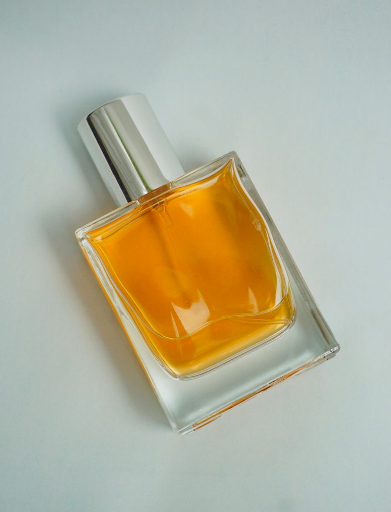

Dior
Sauvage Elixir
Favorito
Designer
₡85.000
Carved by the blade. Finished by the scent.
Las casas que definieron la elegancia moderna — Dior, Chanel, Hermès. Composiciones probadas por décadas, seguras para cualquier ocasión y siempre reconocibles. El punto de partida perfecto.
Perfumería de autor en producciones pequeñas — Le Labo, Xerjoff, Amouage. Aromas con carácter propio, para quien ya sabe lo que busca y prefiere llevar algo que casi nadie más tiene.
La tradición del oud, el azafrán y el ámbar — Lattafa, Rasasi, Afnan. Intensidad y duración fuera de serie a precios que todavía sorprenden. El secreto mejor guardado del catálogo.
¿Para qué momento lo buscás?
Designer, Niche y Árabe — cada fragancia elegida por carácter, no por catálogo.

Explora el catálogo, filtra por día o noche, y añade a tu selección lo que te llame la atención.
Tu selección se convierte en un mensaje directo a Luis. Sin cuentas, sin pagos en línea, sin complicaciones.
Recogida en San José o envío coordinado a todo el país. El pago se acuerda al confirmar tu pedido.
¿Buscas algo que no está aquí? Lo conseguimos por ti.
Un aroma no se ve. Se recuerda.
El mismo ojo que perfecciona cada corte, curó esta selección.
Luis trabaja como barbero en Gents Barbershop, San José — donde la precisión es el estándar y cada cliente sale en su mejor versión. Ese mismo criterio, esa misma obsesión por el detalle, eligió cada fragancia de Blades Privé.
Años detrás de la silla construyen algo que no se compra: confianza. Los mismos clientes que le confían su imagen cada quince días fueron los primeros en preguntar por las fragancias que llevaba puestas.
Blades Privé nació de esa pregunta. No es una tienda más — es una respuesta personal: una selección corta, curada a mano, de alguien que sabe que el estilo se termina con el aroma.
@luisblades_El barbero y curador detrás de cada elección.
Sí. Cada pieza proviene de distribuidores establecidos y se verifica — lote, empaque y sellado — antes de entregarse. Si algo no nos convence, no se vende.
En San José normalmente coordinamos en 24–48 horas. Para el resto del país, el envío se coordina por encomienda o Correos y suele tomar de 2 a 4 días hábiles.
Efectivo o SINPE Móvil al recibir en San José; para envíos, SINPE o transferencia antes del despacho. Todo se acuerda por WhatsApp — nunca pagos en línea.
Las fragancias agotadas se marcan en el catálogo. Si te interesa una, escríbenos — muchas veces podemos conseguirla como encargo, con precio y tiempo confirmados antes de que te comprometas.
Sí — para eso existe el servicio de encargos. Creed, Roja, ediciones limitadas o árabes difíciles de encontrar: dinos qué buscas y lo rastreamos por ti.